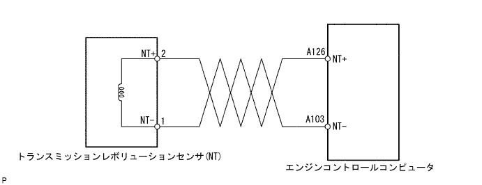
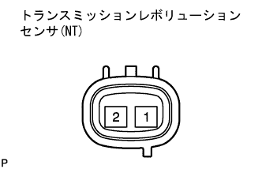
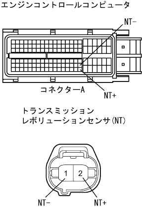

DTC P0717/37 Speed Sensor Circuit |
| DTC No. | DTC Detection Conditions 1. Diagnosis conditions 2. Malfunction status 3. Malfunction duration 4. Other | Inspection Area |
|---|---|---|
| P0717/37 |
|
|

| Step 1 | Read TaSCAN Data (Turbine Speed) |
Using SST (TaSCAN), display the [ECU Data Monitor] screen according to the screen display, and check the computer data.
| Item Name [Symbol] | Item Description | Condition | Reference Value |
|---|---|---|---|
| Turbine speed (NT) [NT] | Indicates turbine speed Display range: 0 to 12750rpm | Vehicle stopped in P or N position (engine idling) | Almost the same as the engine idle speed |
| Turbine speed (NT) [NT] | Indicates turbine speed Display range: 0 to 12750rpm | Vehicle stopped in D position | 0rpm |
| Turbine speed (NT) [NT] | Indicates turbine speed Display range: 0 to 12750rpm | Lock-up ON | Same as engine speed |
| Result | NG |
|---|---|
| NG | A |
| OK | B |
|
| ||||
| A | |
| Step 2 | Inspect Transmission Revolution Sensor (NT) |
 |
Disconnect the transmission revolution sensor (NT) connector.
Using SST (Toyota electrical tester), measure the resistance between the connector terminals.
| Tester Connection | Condition | Standard |
|---|---|---|
| 1(NT-) - 2(NT+) | 20°C | 560 to 680Ω |
|
| ||||
| OK | |
| Step 3 | Inspect Wire Harness or Connector (Transmission Revolution Sensor (NT) - Engine Control Computer) |
for reference. |
Disconnect connector A of the engine control computer.
Using SST (Toyota electrical tester), measure the resistance between each terminal of the engine control computer and the revolution sensor (NT) vehicle side connectors. (For Terminals of ECU, see)
| Tester Connection (Terminal Name) | Condition | Standard |
|---|---|---|
| A126(NT+) - 2(NT+) | Always | Below 1 Ω |
| A103(NT-) - 1(NT-) | Always | Below 1 Ω |
| A126 (NT+) and 2 (NT+) - Body ground | Always | 10k Ω or higher |
| A103 (NT-) and 1 (NT-) Body ground | Always | 10k Ω or higher |
|
| ||||
| OK | |
| Step 4 | Replace Engine Control Computer |
| NEXT | |
| Step 5 | TaSCAN (A/T / CVT Learned Value Initialization, G Sensor 0-point Learning and CVT Hydraulic Pressure Learning) |
| Replacement Parts |
|
Using SST (TaSCAN), perform A/T/CVT learned value initialization, G sensor 0 point learning and CVT hydraulic pressure learning.
for reference.Check the DTCs again. (see)
| NEXT | ||
| ||